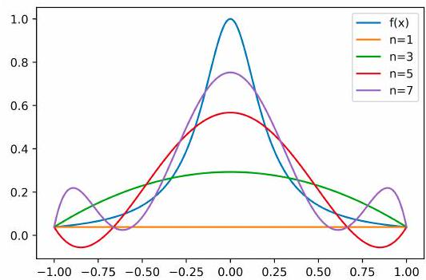

Polynomials and Weierstrass theorem¶
from IPython.display import IFrame
IFrame(src="https://cdnapisec.kaltura.com/p/2356971/sp/235697100/embedIframeJs/uiconf_id/41416911/partner_id/2356971?iframeembed=true&playerId=kaltura_player&entry_id=1_n3qabbq8&flashvars[streamerType]=auto&flashvars[localizationCode]=en&flashvars[leadWithHTML5]=true&flashvars[sideBarContainer.plugin]=true&flashvars[sideBarContainer.position]=left&flashvars[sideBarContainer.clickToClose]=true&flashvars[chapters.plugin]=true&flashvars[chapters.layout]=vertical&flashvars[chapters.thumbnailRotator]=false&flashvars[streamSelector.plugin]=true&flashvars[EmbedPlayer.SpinnerTarget]=videoHolder&flashvars[dualScreen.plugin]=true&flashvars[hotspots.plugin]=1&flashvars[Kaltura.addCrossoriginToIframe]=true&&wid=1_vigulo1y" ,width='800', height='500')
Approximation by polynomials and Weierstrass Theorem¶
Let \(\alpha=\left(\alpha_{1}, \cdots, \alpha_{d}\right)\) with \(\alpha_{i}\) being non-negative integers, we note \(|\alpha|=\sum_{i=1}^{d} \alpha_{i}\) and
We use \(\mathbb{P}_{m}\left(\mathbb{R}^{d}\right)\) to define the polynomials of \(d\)-variables of degree less than \(m\) which consists functions of the form
Weierstrass Theorem and Proof¶
Important property: polynomials can approximate any reasonable function!
dense in \(C(\Omega)\) [Weierstrass theorem]
dense in all Sobolev spaces: \(L^{2}(\Omega), W^{m, p}(\Omega), \ldots\)
Theorem 1. Let \(\Omega \subset R^{n}\) be a closed and bounded set. Given any continuous function \(f(x)\) on \(\Omega\), there exists a sequence of polynomials \(\left\{P_{n}(x)\right\}\) such that
Proof. Let us first give the proof for \(d=1\) and \(\Omega=[0,1] .\) Given \(f:[0,1] \rightarrow R\) be a continuous function.
Let
where \(l(x)=f(0)+x(f(1)-f(0))\). Then \(\tilde{f}(0)=\tilde{f}(1)=0\). Noting that \(l(x)\) is a linear function, hence without lose of generality, we can only consider the case \(f:[0,1] \rightarrow R\) with \(f(0)=f(1)=0\)
Since \(f\) is continuous on the closed interval \([0,1]\), then \(f\) is uniformly continuous on \([0,1]\).
First we extend \(f\) to be zero outside of \([0,1]\) and obtain \(f: R \rightarrow R\), then it is obviously that \(f\) is still uniformly continuous.
Next for \(0 \leq x \leq 1\), we construct
where \(Q_{n}(x)=c_{n}\left(1-x^{2}\right)^{n}\) and
Thus \(\left\{p_{n}(x)\right\}\) is a sequence of polynomials.
Since
Combing with \(\int_{-1}^{1} Q_{n}(x) d x=1\), we obtain \(c_{n}<n\) implying that for any \(\delta>0\)
so that \(Q_{n} \rightarrow 0\) uniformly in \(\delta \leq|x| \leq 1\) as \(n \rightarrow \infty\).
Given any \(\epsilon>0\), since \(f\) in uniformly continuous, there exists \(\delta>0\) such that for any \(|y-x|<\delta\), we have
Finally, let \(M=\max |f(x)|\), using \((1.8),(1.4)\) and \((1.7)\), we have
for all large enough \(n\), which proves the theorem.
The above proof generalize the high dimensional case easily. We consider the case that
By extension and using cut off function, W.L.O.G. that we assume that \(f=0\) on the boundary of \(\Omega\) and we then extending this function to be zero outside of \(\Omega\).
Let us consider the special polynomial functions
Similar proof can then be applied. \(\square\)
Some issues with polynomial approximations¶
Curse of dimensionality¶
Number of coefficients for polynomials of degrees \(n\) in \(\mathbb{R}^{d}\) is
For example \(n=100\) :
\(d=\) 2 4 8
\(N=\) \(5 \times 10^{3}\) \(4.6 \times 10^{6}\) \(3.5 \times 10^{11}\)
Runge’s phenomenon¶
Consider the case where one desires to interpolate through \(n+1\) equispaced points of a function \(f(x)\) using the n-degree polynomial \(P_{n}(x)\) that passes through those points. Naturally, one might expect from Weierstrass’ theorem that using more points would lead to a more accurate reconstruction of \(f(x)\). However, this particular set of polynomial functions \(P_{n}(x)\) is not guaranteed to have the property of uniform convergence; the theorem only states that a set of polynomial functions exists, without providing a general method of finding one.
The \(P_{n}(x)\) produced in this manner may in fact diverge away from \(f(x)\) as \(\mathrm{n}\) increases; this typically occurs in an oscillating pattern that magnifies near the ends of the interpolation points. This phenomenon is attributed to Runge.
Problem: Consider the Runge function
(a scaled version of the Witch of Agnesi). Runge found that if this function is interpolated at equidistant points \(x_{i}\) between \(-1\) and 1 such that:
with a polynomial \(P_{n}(x)\) of degree \(\leq n\), the resulting interpolation oscillates toward the ends of the interval, i.e. close to \(-1\) and 1. It can even be proven that the interpolation error increases (without bound) when the degree of the polynomial is increased:
This shows that high-degree polynomial interpolation at equidistant points can be troublesome

Fig. 1.1. Runge’s phenomenon: Runge function \(f(x)=\frac{1}{1+25 x^{2}}\) and its polynomial interpolation \(P_{n}(x)\).